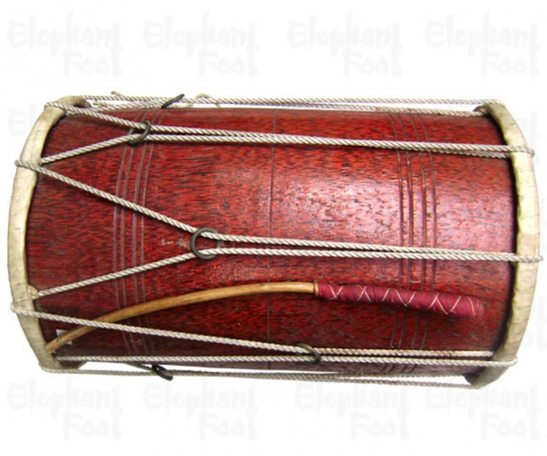
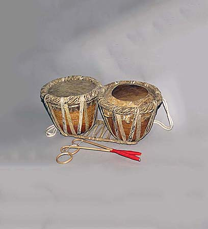
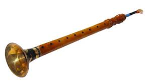

What is Sri Lankan Traditional Dance?
Sri Lankan traditional dance is a vibrant cultural art form practiced for centuries. It combines movement, rhythm, music, and storytelling to celebrate religion, mythology, and social events.
These dances are performed at religious ceremonies, cultural festivals, and national celebrations, preserving the rich heritage and traditions of Sri Lanka.
Traditional dances are often linked to Buddhist rituals and local folklore. Each dance style has distinct movements, drum patterns, and costumes reflecting its regional origin.
Main Dance Styles
- Kandyan Dance
- Low Country Dance
- Sabaragamuwa Dance
Historical Background
- Kandyan dance originated in the Kandy Kingdom, performed in honor of the Sacred Tooth Relic of Lord Buddha.
- Low Country dances developed in southern coastal regions, often as exorcism rituals to drive away evil spirits.
- Sabaragamuwa dances are ritualistic dances from Sabaragamuwa province, performed to honor deities during temple ceremonies.
- These dances are traditionally taught in dance schools called "Adu" or "Gurukulas".
Instruments Used
- Drums (Kandyan Dance : Geta Bera, Low Country Dance : Yak Bera, Sabaragamuwa Dance : Dawula, Thammattama) – core of rhythm and timing.
- Flutes (Horanawa) – melodic accompaniment.
- Cymbals & Bells – accentuate rhythm and group synchronization.
- Music is usually live, creating dynamic interaction between dancers and musicians.





Costumes and Props
- Kandyan: Ves headdresses, decorated jackets, skirts, and ankle bells.
- Low Country: Masks, colorful attire, ceremonial props.
- Sabaragamuwa: Symbolic attire and small drums.
 |
 |
 |
 |
 |
 |
 |
Choreography and Performance
Choreography in Sri Lankan traditional dance is deeply connected to rituals and storytelling. Movements, gestures, and sequences have symbolic meaning and are passed down through generations.
- Group formations, especially in Kandyan dance.
- Live drumming guides timing and rhythm.
- Expressions and gestures convey stories and devotion.
- Performed at temples, festivals, and cultural shows.
|
|
|
|
Cultural Significance
These dances preserve Sri Lankan history, mythology, and spiritual practices. They foster community participation, cultural pride, and are performed at national festivals and tourist events. Kandyan dance has been recognized by UNESCO as an Intangible Cultural Heritage.
Famous Performers & Dance Schools
- Ves dancers: Elite Kandyan dancers mastering traditional Ves techniques.
- Guru performers: Experienced teachers training students in temples and dance schools.
- Popular schools: Chitrasena Academy, Kandyan Dance Gurukula.
Festivals and Performance Venues
- Esala Perahera (Kandy): Grand cultural procession featuring Kandyan dance.
- Temple rituals: Low Country and Sabaragamuwa dances.
- Cultural shows: Hotels, tourism events, and school festivals.
Learn Sri Lankan Traditional Dance
Explore Sri Lankan traditional dances in depth and watch more videos to experience the beauty of these dances.

Kandyan Dance
Traditional up-country dance style known for powerful movements and elegent costumes.
View Kandyan Dance
Low Country Dance
Famous for ritualistic masks, vibrant colors and dramatic storytelling movements.
View Low Country Dance
Sabaragamuwa Dance
Graceful traditional dance performed in rituals and ceremonies in Sabaragamuwa region.
View Sabaragamuwa DanceLearn Sri Lankan Traditional Dance from experienced teachers
Explore Sri Lankan traditional dances in depth and learn from experienced teachers & Book a class to experience the beauty of these dances.